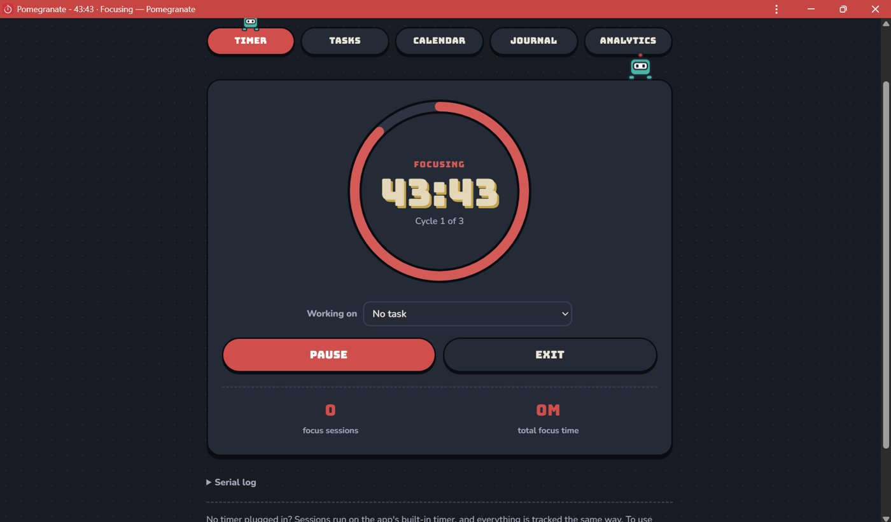

Pomegranate started as a remote for my Pomodoro timer and kind of snowballed into the app I do all my studying in: timer, to-dos, calendar, journal and stats, synced across my laptop, iPhone and iPad.

It's a web app you can install like a normal one, with five tabs:
- Timer: runs on my USB timer, or a built-in one
- Tasks: type "Lab report fri p1 d4 #ECE140" and it sets the due date, priority, difficulty and course at once
- Calendar: what's due, plus each day's score
- Journal: a few lines and a rating out of 10
- Analytics: focus, break and desk time vs. yesterday and last week
The fun stuff is all under the hood.
USB from a browser
It's a website and not a desktop app because of the Web Serial API: Chrome and Edge can open a USB port directly, no drivers. So the whole thing is just a GitHub Pages link with a Connect button.
The timer sends a line like "state=FOCUS left=1342 cycle=2" every second, and the app redraws from that. Hitting Pause just sends PAUSE and waits for the timer to say it's paused. The app never decides anything, it just shows what the timer tells it.
A timer without the timer
There's no USB timer on my phone, so I wrote a software clone of the Arduino that speaks the exact same protocol. The rest of the app can't tell the difference.
The catch: phones pause web apps and browsers throttle background tabs, so counting ticks would drift. Instead it stores when each phase ends, and when the app wakes up it replays everything it missed. Phone slept through a whole break? Still exactly right.
Scoring a session
The app knows every second you spent focused, on break or paused, so each session gets a score out of 100:
The daily score mixes focus time vs. a goal, tasks done, and session scores. If something doesn't apply (like no tasks due), it's dropped instead of counting against you.
Syncing everything
Everything saves locally first so it works offline, and signing in with Google syncs it through Firebase Firestore.
Tasks and journal entries go "newest change wins", and deleted stuff leaves a little marker so it doesn't come back from another device. Study time can't work like that (two devices would overwrite each other), so each device keeps its own totals and Analytics adds them up.
Running sessions sync too. All the times are absolute ("focus ends at 3:42:10 PM"), so every device counts down on its own. I can start on my laptop and pause from my phone, and if the USB timer's plugged in, the pause goes all the way through to the Arduino. Only the device that started a session logs it, so nothing gets triple-counted.
Notifications
I wanted a phone notification when a block ends, but a sleeping web app can't send one. So a Firebase function schedules a Cloud Task for every upcoming phase change, and each one fires a Web Push (works on iPhone if the app's on your Home Screen).
Pausing was the tricky bit. Instead of cancelling scheduled alerts, every session change gets a new random ID, and an alert just skips itself if its ID is out of date.
Built solo with JavaScript, Web Serial, Firebase (Firestore, Cloud Functions, Cloud Tasks) and Web Push, hosted on GitHub Pages.